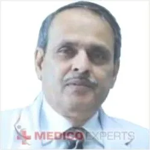

OUR TOP DOCTERS
1. Dr. Ajaya Nand Jha

MBBS, MS, FRCS – Neurosurgery
He has 42 years of experience
Dr Jha is an eminent neurosurgeon and has specialised in the use of intra operative MRI and use of ALA dyes in cerebrovascular and tumour surgeries.
He has also contributed greatly in the field of stroke, epilepsy and movement disorders.
He has 42 years of experience including 33 years as a neuro specialist. He practices at Medanta Medicity.
he is member of Indian Medical Association (IMA), Neurological Society of India, Delhi Neurological Association (DNA), Congress of Neurological Surgeons, USA, The Society of British Neurological Surgeons (SBNS)
Book Appointment
suresh joshi
2.
Dr. Suresh Joshi

MBBS, MS, Mch
He has 42 years of experience
Dr Joshi is a very well renowned cardiac surgeon based in Mumbai
He introduced in India ‘Minimally Invasive & Thoracoscopic Cardiac Surgery’.
For the first time he performed Beating heart coronary bypass surgery on an adult
He established open heart surgery in neonates and children.
He has 42 years of experience with 39 years as a specialist.
He practices at Joshi Suresh Clinic in Mumbai.
Contact Us: +91 8878654345